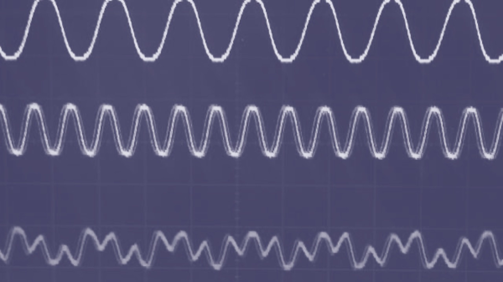
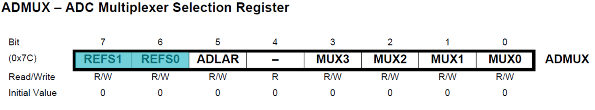
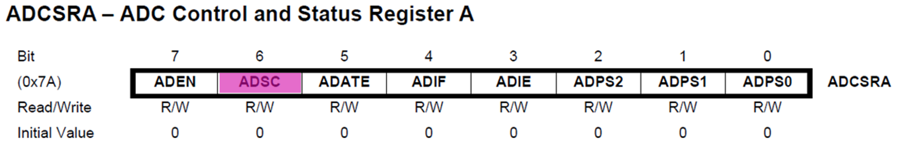
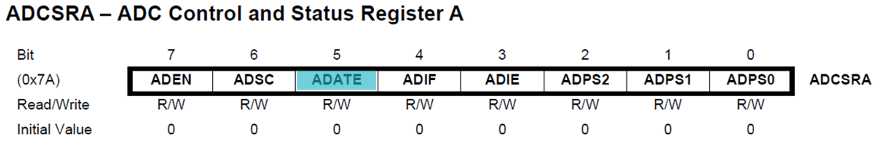

7 Interfacing to Analogue I/O with C
Presentation version of these notes.

Introduction
C is a high-level structured programming language which is often used for writing microcontroller applications. This lecture looks at how I/O operations are performed on analogue inputs.
Lecture topics

Outline
In this lecture we will be looking at how we can read analogue signals into a microcontroller using an analogue to digital converter (ADC).
- We begin by introducing analogue signals and the fundamental principals of an ADC.
- We move on to look at the ADC contained on the Atmel ATmega328 microcontroller, focussing on the key registers and how to use them.
- We conclude with an example program for the Atmel ATmega328 microcontroller which reads the voltage from a potentiometer and turns on some LEDs based on the voltage.
7.1 What are analogue signals?

This image by Unknown Author CC-BY-SA-NC.
7.1.1 Analogue signals
Analogue signals are those that are both continuous in time and continuous in amplitude i.e. they are continuous signals.
In the real world, most measurable parameters are actually analogue. They include such signals as temperature, humidity, light, sound, etc.
An analogue sensor
An analogue sensor for measuring light intensity is shown in Figure 7.1 along with a calibration graph that would be typically supplied in the data sheet for such a sensor.

7.1.2 Sampling and quantization
Since microcontrollers can only handle 0s and 1s (digital signals) we need a way of converting analogue signals to digital signals. This is done using an analogue-to-digital converter or ADC.
An ADC converts a continuous-time and continuous-amplitude analogue signal to a discrete-time and discrete-amplitude digital signal through the process called sampling and quantization illustrated in Figure 7.2.
Sampling and quantization of an analogue signal
7.1.3 ADC Principles
An analogue signal is continuous in time and amplitude and to convert it to a digital signal it is necessary to periodically sample the analogue signal. The rate at which the signal is sampled is referred to as the sampling rate.
Each time the signal is sampled the analogue value must be represented in one of several discrete bins (digital values). The number of discrete bins available is called the resolution.
Both the sampling rate and the conversion resolution need to be sufficiently high to create an accurate digital reconstruction of the analogue signal.
7.1.4 ADC Sampling Rate
The Nyquist–Shannon sampling theorem implies that to get an accurate reproduction of the original signal, the sampling rate must be higher than twice the highest frequency of the signal. Lower than this and the reproduced signal will be distorted, and data lost.
This will be covered in more detail in EG-247 Digital Signal Processing in year 2
Example
Consider the sine wave governed by the equation \(x(t) = sin(t)\). The period is \(2\pi\) (approx. 6.3 seconds) so the frequency is 0.16 Hz (Figure 7.3).

Sampled sine wave
If we sample this at 0.5 Hz (once every 2 seconds), which is over 3 times the original frequency, we get the orange trace Figure 7.4. From this it would be enough to accurately recreate the blue trace.
7.1.5 ADC Resolution
As well as the sampling rate, the resolution of the converter is crucial to getting an accurate representation of the input signal. The resolution indicates the number of discrete values that can be used over the total range of analogue values.
7.1.5.1 A 2-bit ADC
As an example a 2-bit ADC has \(2^2 = 4\) quantization levels (Figure 7.5).
7.1.5.2 A 3-bit ADC has \(2^3 = 8\) quantization levels (Figure 7.6).

7.1.5.3 Resolution of a 3-bit ADC
To calculate the resolution of an ADC we use Equation 7.11.
\[ \mathrm{Digital\ Output} = \left\lfloor\frac{\left(2^N-1\right)\times\mathrm{Analogue\ Input\ Voltage}}{\mathrm{Reference\ Voltage}}\right\rfloor \tag{7.1}\]
The graph in Figure 7.7 shows the values (bins) that are available for a three bit ADC.

Examples
Example 1
Let’s say that we have a 10-bit ADC and the reference voltage is 5V.
If our input is 2.2V the the digital output will be:
\[\begin{align} \mathrm{Digital\ Ouput} &= \left\lfloor \frac{1023 \times 2.2}{5}\right\rfloor \\ &= \lfloor 450.12 \rfloor = 450_{10}\\ &= 10\ 1100\ 0010_2 \end{align}\]
Notice in the first example when the resolution is 10-bit the answer consists of 10 bits not 12 or 16.
Example 2
Let’s say that we have a 6-bit ADC and the reference voltage is 3.3.
If our input is 1V the the digital output will be:
\[\begin{align} \mathrm{Digital\ Ouput} &= \left\lfloor \frac{63 \times 1}{3.3}\right\rfloor \\ &= \lfloor 19.09 \rfloor = 19_{10}\\ &= 01\ 0011_2 \end{align}\]
7.1.5.4 Illustrating the sampling theorem
Violation of the sampling theorem
Consider the signal with frequency \(F_c = 1\)Hz, sampling frequency of \(F_s = 1\)Hz, and resolution = 3 bits. The sampled signal is illustrated in Figure 7.8. The Nyquist-Shannon sampling theorem has clearly been violated and the original signal cannot be reconstructed from the sampled signal.
Sampling at twice the signal frequency
Consider the signal with frequency \(F_c = 1\)Hz, sampling frequency of \(F_s = 2\)Hz (the so-called Nyquist frequency), and resolution = 3 bits. The sampled signal is illustrated in Figure 7.9. The reconstructed signal is on the border of acceptable. In practice, we need to sample at a higher frequency than \(F_s = 2F_c\).

7.1.5.5 Illustrating sampling and quantization
Sampling at five times the signal frequency
Consider the signal with frequency \(F_c = 1\)Hz, sampling frequency of \(F_s = 5\)Hz, and resolution = 3 bits. The sampled signal is illustrated in Figure 7.10. The reconstructed signal (in the bottom trace) is starting to look like a sine wave.
Sampling at ten times the signal frequency
Consider the signal with frequency \(F_c = 1\)Hz, sampling frequency of \(F_s = 10\)Hz, and resolution = 3 bits. The sampled signal is illustrated in Figure 7.11. The reconstructed signal now starting to look like a sine wave. In general, the faster the sampling frequency compared to the frequency of the analogue signal, the better the approximation.

7.2 ADC Architecture
7.2.1 ADC Components
The architecture of the Atmel ATmega328 is shown in Figure 7.12. It contains the following major components:
- Multiplexer2
- Voltage Reference
- Digital to Analogue Converter (DAC)
- Sample and Hold Circuit
- Control and Result Registers
The most important components are described in more detail in the following sections.
7.2.2 Architectures
There are several achitectures for ADCs summarized as:
- Sigma-Delta (\(\Sigma-\Delta\))
- Successive Approximation Register (SAR)
- Pipelined
- Flash
Each has their own advantages and disadvantages in terms of price, conversion speed, noise and complexity as summarized in Figure 7.13.
7.2.2.1 ADC Architecture vs Resolution and Sample Rate
Most general-purpose microcontrollers contain SAR-based architecture ADCs.
7.2.3 SAR based ADC Architecture
Successive-approximation-register (SAR) ADCs are the most common architecture for medium-to-high-resolution applications with sample rates under 5 megasamples per second.
The SAR converter is essentially a binary search algorithm which compares the input to the ADC with the output from a digital to analogue converter (DAC) until the input matches the DAC output and the device is able to output the corresponding binary value.
While the internal circuitry of the ADC may be running at several megahertz, the ADC sample rate is a fraction of that number due to the multiple step successive-approximation algorithm needed to convert the measured input to a binary number.
The SAR converter is at the heart of the ATmega328 microcontroller and is highlighted in Figure 7.14.

7.2.3.1 SAR based ADC Operation
Consider the schematic diagram shown in Figure 7.15.

7.2.3.2 SAR operation
- The analogue input signal is held by a track/hold circuit and fed as \(V_\mathrm{IN}\) into a comparator.
- To implement the binary search algorithm, the \(N\)-bit register is first set to mid-scale (that is the MSB is set to 1 and all other bits set to 0) so that the voltage at \(V_\mathrm{DAC} = V_\mathrm{REF}/2\).
- A comparison is then performed to determine if \(V_\mathrm{IN} \le V_\mathrm{DAC}\).
- If \(V_\mathrm{IN} > V_\mathrm{DAC}\), the comparator output will be logic high (or 1), and the MSB of the \(N\)-bit register remains at 1.
- If \(V_\mathrm{IN} < V_\mathrm{DAC}\), the comparator output is a logic low (0) and the MSB of the \(N\)-register is cleared to logic 0.
- The SAR control logic then moves to the next bit along4, forces that bit high, and repeats the comparison. The sequence continues all the way down to the LSB (bit 0).
- Once the input has been compared with the full \(N\)-bit register the conversion is complete and the \(N\)-bit digital word is sent to the ADC output register.
7.2.3.3 4-bit SAR based ADC Example

Consider Figure 7.16:
- Bit 3 is set high (compare signal is \(1000_2\))
- \(V_\mathrm{IN} < V_\mathrm{DAC}\) so the comparator output is low (0).
- Bit 3 is set low and bit 2 is set high (compare signal is now \(0100_2\)).
- \(V_\mathrm{IN} > V_\mathrm{DAC}\) so the comparator output is high (1).
- Bit 2 remains high and now Bit 1 is set high too (compare signal is \(0110_2\)).
- \(V_\mathrm{IN} < V_\mathrm{DAC}\) so the comparator output is low (0).
- Bit 1 is set low and bit 0 is set high (compare signal is \(0101_2\))
- \(V_\mathrm{IN} > V_\mathrm{DAC}\) so the comparator output is high (1).
The final output of the conversion is \(0101_2 = 5/16 V_\mathrm{REF} = 0.3125 V_\mathrm{REF}\).
7.3 The Atmel ATmega328 Analog-digital-converter

Image source: This Photo by Unknown Author is licensed under CC BY-NC
7.3.1 The Atmel ATMega328 ADC
The Atmel ATMega328 features a 10-bit successive approximation ADC.
The ADC is connected to an 8-channel Analog Multiplexer which allows eight single-ended voltage inputs (referenced to GND) constructed from the pins of Port C.
7.3.1.1 Technical specifications
The ADC provides:
- 10-bit Resolution
- 13 - 260μs Conversion Time
- Up to 76.9kSPS5 (Up to 15kSPS at Maximum Resolution)
- 9 Multiplexed Single Ended Input Channels
7.3.1.2 Hardware registers used
ADMUX- ADC Multiplexer Selection Register.ADCSRA- ADC Status and Control Register A.ADCSRB- ADC Status and Control Register B.ADCLandADCH- The ADC Output Registers.DIDR0- Digital Input Disable Register 0.
These registers are described in the following sections.
ADMUX – ADC Multiplexer Selection
The ADMUX is an 8-bit register arranged as shown in Figure 7.17.
ADMUX (Source: Atmel Documentation).
Reference selection bits

Bits 7 and 6—REFS1 and REFS0—select the reference voltage for the ADC6.
The settings for the reference selection bits are tabulated in Table 7.1.
ADMUX register.
| REFS1 | REFS0 | Voltage Reference Selection |
|---|---|---|
| 0 | 0 | AREF, Internal \(V_\mathrm{REF}\) turned off. |
| 0 | 1 | AVCC with external capacitor on AREF. |
| 1 | 0 | Reserved |
| 1 | 1 | Internal 1.1V reference with external capacitor at AREF pin. |
Bit 5 – ADLAR: ADC Left Adjust Result
ADLAR bit (bit 5) affects the presentation of the ADC conversion result in the ADC Data Register.
We write 1 to ADLAR to left adjust the result.
Otherwise, the result is right adjusted.
We will revisit this in a couple of slides when we discuss the results registers.
Bits 3:0 – MUX[3:0]: Analog Channel Selection Bits
The value of these bits selects which analogue inputs are connected to the ADC (see Figure 7.18 and Table 7.2).

| MUX3:0 | Input Selected |
|---|---|
| \(0000\) | ADC0 |
| \(0001\) | ADC1 |
| \(0010\) | ADC2 |
| \(0011\) | ADC3 |
| \(0100\) | ADC4 |
| \(0101\) | ADC5 |
| \(0110\) | ADC6 - Not used on the Arduino nano board |
| \(0111\) | ADC7 - Not used on the Arduino nano board |
| \(1000\) | ADC8 - Used for internal temperature sensor. |
| \(1001\) | Reserved |
| \(1010\) | Reserved |
| \(1011\) | Reserved |
| \(1100\) | Reserved |
| \(1101\) | Reserved |
| \(1110\) | 1.1V (\(V_\mathrm{BG}\)) |
| \(1111\) | GND |
ADCSRA - ADC Control and Status Register A
Bit 7 - ADEN: ADC Enable
Writing 1 to bit 7 of the ADCSRA register enables the ADC. Writing 0 to this bit turns the ADC off.
Bit 6 - ADSC: ADC Start Conversion

- In Single Conversion Mode, writing 1 to bit 6 of the
ADCSRAregister starts the conversion. - In Free Running Mode, writing 1 to this bit starts the first conversion.
Bit 5 - ADATE: ADC Start Conversion

When 1 is written to bit 5 of the ADCSRA register, the ADC will start a conversion on a positive edge of the selected trigger signal7
Bit 4 - ADIF: ADC Interrupt Flag

This bit is set when an ADC conversion completes, and the data registers are updated. The ADC Conversion Complete Interrupt is executed if the ADIE bit and the I-bit in the status register are set.
Bit 3 - ADIE: ADC Interrupt Enable

Writing 1 to bit30 of the ADCSRA register, when the I-bit in the status register is set, activates the ADC Conversion Complete Interrupt
Bits 2-0 - ADPS[2:0]: ADC Interrupt Enable

Bits 2-0 of ADCSRA determine the division factor between the system clock frequency and the input clock to the ADC. That is they set the sample rate for free-running mode. The prescaler settings are tabulated in Table 7.3.
ADPS2 |
ADPS1 |
ADPS0 |
Division Factor |
|---|---|---|---|
| 0 | 0 | 0 | 2 |
| 0 | 0 | 1 | 2 |
| 0 | 1 | 0 | 4 |
| 0 | 1 | 1 | 8 |
| 1 | 0 | 0 | 16 |
| 1 | 0 | 1 | 32 |
| 1 | 1 | 0 | 64 |
| 1 | 1 | 1 | 128 |
ADCSRB - ADC Control and Status Register B
Bit 6 - ACME: Analogue comparator multiplexer enable

When logic 1 is written to bit 6 of ADCSRB the ADC is switched off, the ADC multiplexer selects the negative input to the Analog Comparator. When 0 is written to this bit, AIN1 is applied to the negative input of the Analog Comparator.
Note: The Analog Comparator compares the input values on the positive pin AIN0 and negative pin AIN1. When the voltage on the positive pin AIN0 is higher than the voltage on the negative pin AIN1, the Analog Comparator output, ACO, is set.
Bits 2:0 - ADT[2:0]: ADC Autotrigger source
If logic 1 is written to the ADATE bit in the ADCSRA register, the value of the ADTS bits selects which source will trigger an ADC conversion. The trigger source settings are tabulated in Table 7.4.
ADTS2 |
ADTS1 |
ADTS0 |
Trigger Source |
|---|---|---|---|
| 0 | 0 | 0 | Free Running Mode |
| 0 | 0 | 1 | Analogue Comparitor |
| 0 | 1 | 0 | External Interrupt Request 0 |
| 0 | 1 | 1 | Timer/Counter 0 Compare Match A |
| 1 | 0 | 0 | Timer/Counter 0 Overflow |
| 1 | 0 | 1 | Timer/Counter 0 Compare Match B |
| 1 | 1 | 0 | Timer/Counter 1 Overflow |
| 1 | 1 | 1 | Timer/Counter 1 Capture Event |
ADCL and ADCH - The ADC Data Registers
The ADC Data Registers are illustrated in Figure 7.19.

ADCH and ADCL when (a) ADLAR = 0 and (b) when ADLAR = 1.
When an ADC conversion is complete, the result is put in these two registers8.
When ADCL is read, the ADC Data Register is not updated until ADCH is read.
If the result is left adjusted and no more than 8-bit precision is required, it is sufficient to read ADCH. Otherwise, ADCL must be read first, then ADCH.
DIDR0 - Digital Input Disable Register 0
Bits 5:0 - ADC5D…ADC0D: ADC5…0 Digital Input Disable
When logic 1 is written to one of these bits, the digital input buffer on the corresponding ADC pin is disabled. (i.e. the corresponding PIN register bit will always read zero).
When an analog signal is applied to the ADC5…0 pin and the digital input from this pin is not needed, logic 1 should be written to this bit to reduce power consumption in the digital input buffer.
7.3.1.3 Setting up the ADC
The following steps are illustrated in flow-chart form in Figure 7.20.
In words, the operations to be completed are:
- Define convenient names for the required registers.
- Set the data direction of the relevant pins to input (
DDRxn) - Set the corresponding pin in the input disable register to 1 to disable the input buffer (
DIDR0) - Select the reference voltage, result alignment and input channel (
ADMUX) - Select the ADC prescaler value in the A control and status register (
ADCSRA) - Write a 1 to the
ADENbit of the A control and status register to enable the ADC (ADCSRA)
The main code is illustrated in the flowchart shown in Figure 7.21.
In words, the operations to be completed are:
- Within the infinite for loop, Write a 1 to the
ADSCbit of the A control and status register each time you want to start a conversion (`ADCSRA``) - Monitor for the
ADSCbit going low (or theADIFbit going high) of the A control and status register. - Read the converted value from the result registers (
ADCHandADCL). - Do something with the ADC result.
We illustrate this in Section 7.4.
7.4 Analogue I/O Example program

7.4.1 Single Conversion Example

- The centre tap of the blue potentiometer shown in Figure 7.22 is connected to the analogue input
A0which represents Port C Bit 0 on the ATmega328 microcontroller. - As the voltage at the input changes, the value is reflected on the 6 LEDs.
- What does the code for this look like without using the predefined Arduino function –
analogRead?
7.4.2 Example code - aligning port names to the I/O memory map
We showed how we use the #define function to map our program variables to the I/O memory map shown in Example code - aligning port names to the I/O memory map. We use the same technique to map the digital and analogue registers to programmer friendly names:
//I/O and ADC Register definitions taken from datasheet
#define PORTB (*(volatile uint8_t *)(0x25))
#define DDRB (*(volatile uint8_t *)(0x24))
#define PINB (*(volatile uint8_t *)(0x23))
#define ADMUX (*(volatile uint8_t *)(0x7C))
#define ADCSRA (*(volatile uint8_t *)(0x7A))
#define ADCRSB (*(volatile uint8_t *)(0x7B))
#define ADCH (*(volatile uint8_t *)(0x79))
#define ADCL (*(volatile uint8_t *)(0x78))
#define DIDR0 (*(volatile uint8_t *)(0x7E))We now define some unsigned integers as either 8 or 16 bits:
- Variable type:
uint16_t - first variable name:
adc_result - High and low byte of
adc_result:adc_result_high,adc_result_low - second variable name:
previous_result - Initial value of
previous_result = 0;”
The definitions are:
7.4.3 Example - the main function
We discussed this in Example Code - the main function.
7.4.4 Example - set up I/O using the registers
// Set Data Direction Registers
DDRB = DDRB | 0b00111111; // Setup bits 0 - 5 of port B as outputs
// Turn all LEDs off
PORTB = PORTB & 0b11000000; // Pins B0 (D8) - B5 (D13) start low
// Set up ADC on pin A0
DIDR0 = DIDR0 | 0b00000001; //Disable pin A0 as a digital input
ADMUX = 0b01000000; // Select reference voltage, right adjusted result and select channel ADC0 - A0
ADCSRA = ADCSRA | 0b00000111; // Select ADC Prescaler
ADCSRA = ADCSRA | 0b10000000; // Enable ADC7.4.5 Example - the processing loop
for(;;)
{
ADCSRA = ADCSRA | 0b01000000; //start conversion by writing 1 to the ADSC bit
while((ADCSRA & 0b01000000) != 0) { } //wait until the ADSC bit changes to 0
adc_result_low = ADCL; //read the low byte of the result into adc_result_low
adc_result_high = ADCH; //read the high byte of the result into adc_result_high
/* shift whole 8 bits of ADC high byte into most significant byte of ADC result and
add in ADC low byte using bitwise OR. */
adc_result = (adc_result_high<<8) | adc_result_low;
// do somethinhg interesting with the ADC readings
}7.4.6 Example - the full program
The full program is available as a GitHub gist: main.c. You will need a fully featured IDE, such as Microchip Studio, to compile and upload the code to the Ardino nano board.
7.4.7 Simulation of the full program
Wokwi is an online Electronics simulator. You can use it to simulate Arduino, ESP32, STM32, and many other popular boards, parts and sensors. – Welcome to Wokwi!
My 2024-2025 EG-353 Individual Engineering Project student, Yousef Alsayegh, has created Wokwi simulations of Ben Clifford’s demonstration programs. Here is the simulation of this week’s simulation Week 6: Interfacing to analogue I/O with C. You can run the simulation and play with the code.
Summary
In this section we have:
- Discussed the differences between analogue and digital signals and the challenges in working with them.
- Explored analogue to digital conversion looking at the architectures and focusing on SAR based ADCs.
- Continued looking at I/O operations on the Atmel ATmega328 microcontroller focusing on analogue signals and using the ADC registers.
On Canvas
This week on the canvas course pages, you will find the sample program from today’s lecture, look through this and ensure you are confident in how it works and how the registers are set for analogue inputs and how masks are used for the digital outputs to the LEDS.
There is also a short quiz to test your knowledge on these topics.
Any Questions?
Please use the Course Question Board on Canvas or take advantage of the lecturers’ office hours.
Next time
Note the symbols \(\lfloor \ldots \rfloor\) are called floor. They round a decimal number to the next lowest integer value. That is the decimal part is simply eliminated. Thus quantization is always going to choose the bin that is the closest to the truncated part of the decimal number.↩︎
The multiplexer allows multiple inputs to share one set of ADC hardware.↩︎
Understanding SAR ADCs: Their Architecture and Comparison with Other ADCs, Analog Devices.↩︎
The “next bit along” will be the MSB-\(1^\mathrm{th}\) bit. That is, for a 12-bit ADC, MSB is bit 11, and the next bit along will be bit 10. If the previous comparison produced a 1, the binary value we are testing is now \(2^{11} + 2^{10} = 2048 + 1024 = 3072\). If the comparison at the previous step was 0, the binary value we are testing is now \(2^{10} = 1024\). The corresponding values of \(V_\mathrm{DAC}\) will now be either \(3072/4096 V_\mathrm{REF} = 0.75 V_\mathrm{REF}\) or \(1024/4096 V_\mathrm{REF} = 0.25 V_\mathrm{REF}\). This process continues until all bits have been considered.↩︎
SPS = Samples per second.↩︎
The internal voltage reference options may not be used if an external reference voltage is being applied to the AREF pin of the microcontroller chip.↩︎
This bit is used for clock-based ADC operation when you need a controlled and predictable sampling rate.↩︎
Recall that the ADC has a precision of up to 10 bits so two data registers are required. Register
ADCLcontains the least significant 8 bits, bits [0-7] andACDHcontains the most significant bits bit 8 and bit 9.↩︎
Copyright © 2021-2024 Swansea University. All rights reserved.